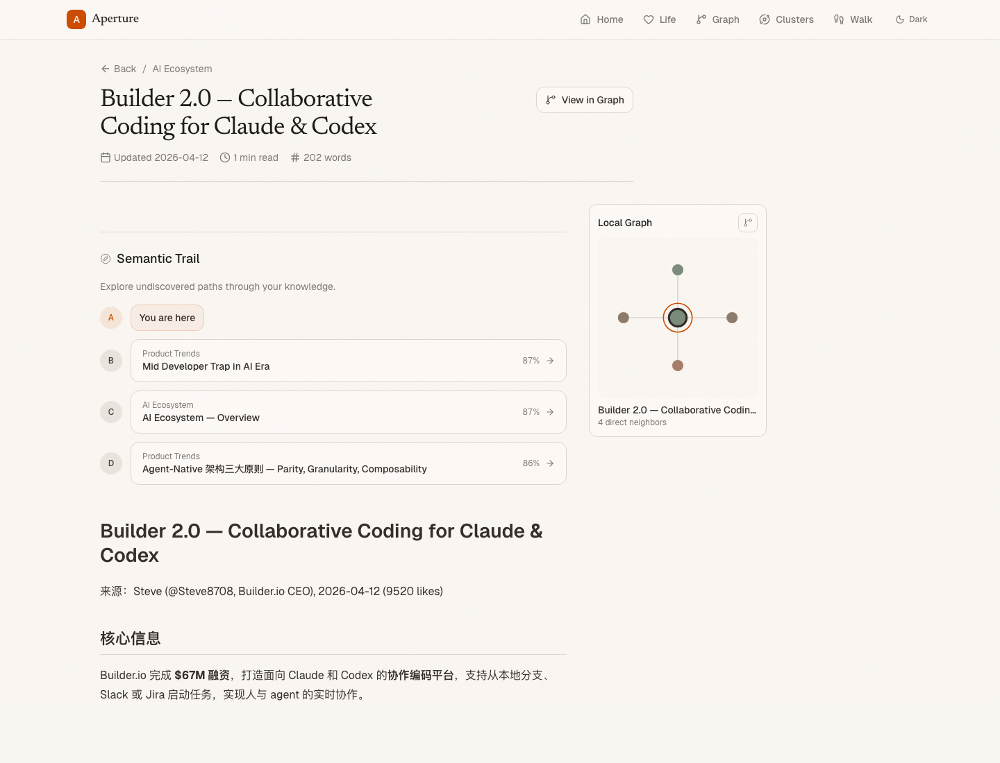
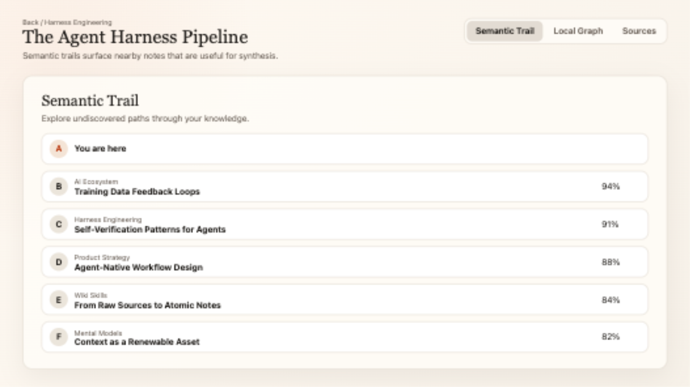
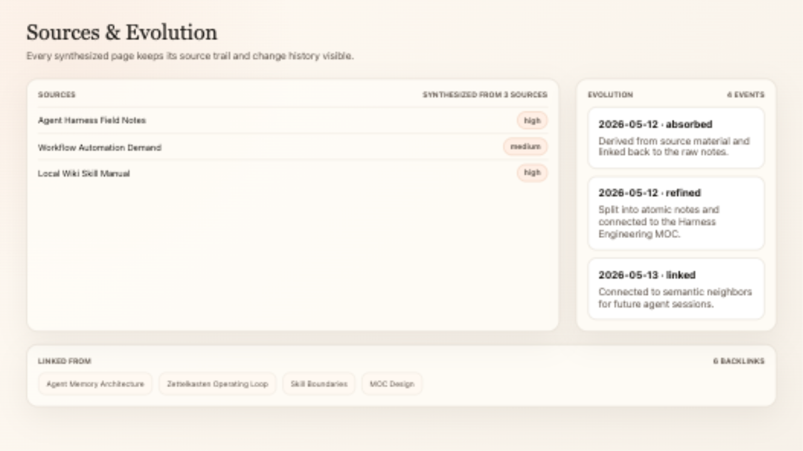
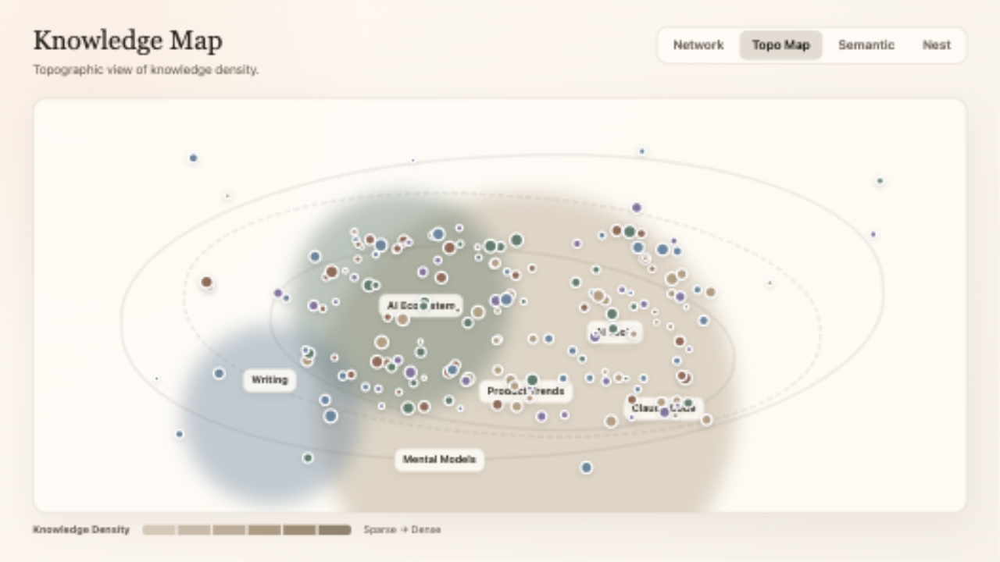
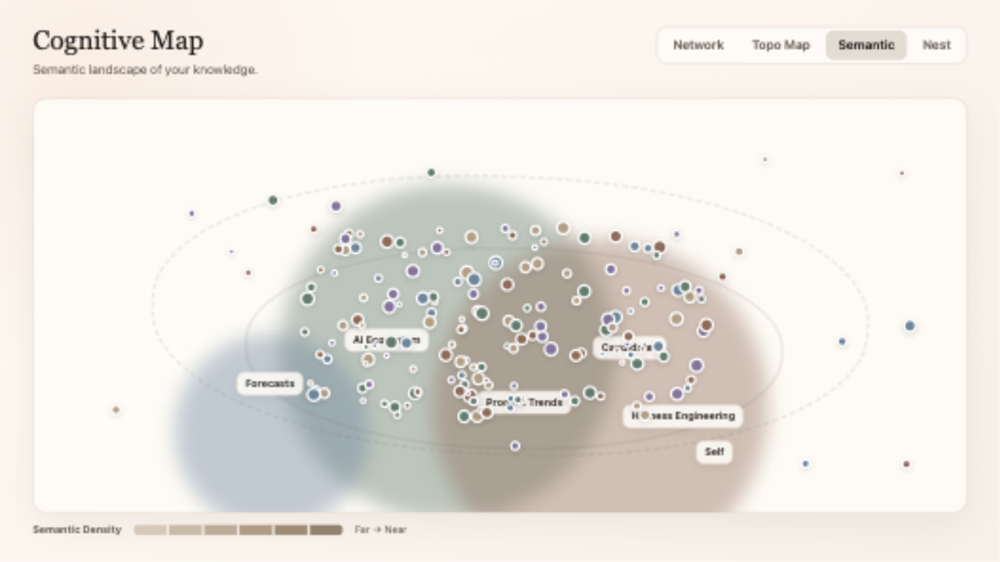
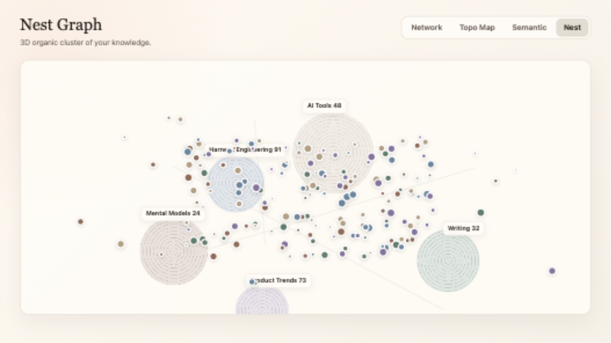
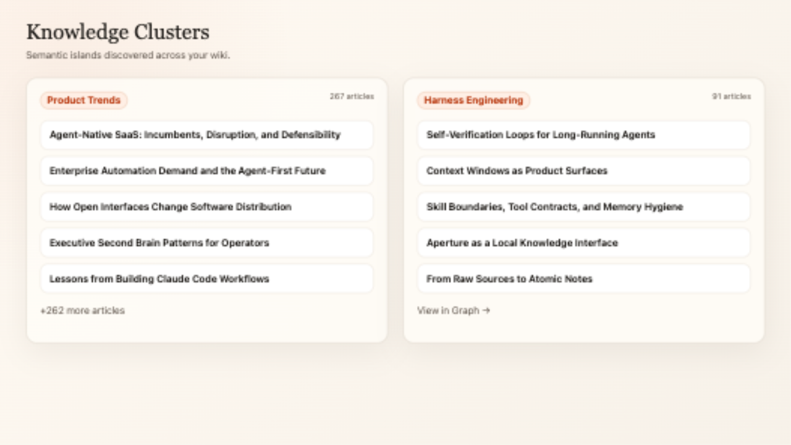
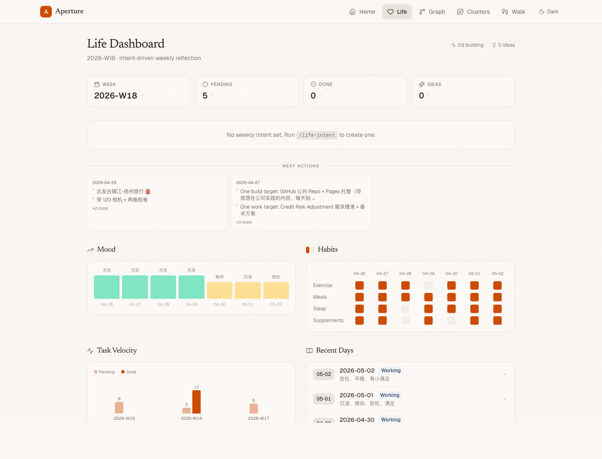

Aperture
A local wiki viewer that turns a folder of markdown into a navigable knowledge graph with source provenance, semantic trails, MOCs, atomic notes, and APIs built for AI agents.

Feature captures
Public demo data, real Aperture UI. These are the images used by the README gallery and launch material.









The loop
Aperture pairs a viewer with skills that help agents keep the vault organized over time.
Capture raw material
Articles, posts, transcripts, tool notes, and briefing files land in plain markdown.
Absorb into wiki
Skills classify material, update concepts, and avoid turning every source into a standalone page.
Map durable knowledge
Atomic notes, MOCs, backlinks, source provenance, and evolution metadata keep context navigable.
Let agents start warm
APIs and llms.txt files let future sessions read the system before reasoning from scratch.